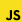
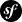

Web and Web Mobile Developer.
Hello ! I’m Antoine, a web developer who has undergone professional
retraining. I acquired a solid grounding in PHP and had the
opportunity to discover the captivating world of React. I’m always
trying to learn and improve myself, so check my projects section !
I'm located in Normandy, so if you're searching a passionate junior
web dev contact me without delay !
Journey.
I started out self-taught, but then I realized what a vast field web development was. It was by far the best rabbit hole I could have fallen into! So I decided to entrust my teaching to specialists: the O'clock solution came to me. In March 2023, my conversion began in earnest. I learned the basics of PHP, then discovered React during a 1-month specialization. Today, I'm preparing to take my DWWM professional title, and I'm continuing to train in the technologies that inspire me, with the aim of constantly expanding my skills. To be continued...
Skills.
Front-end.
- Javascript
- React
- Typescript
Back-end.
- PHP
- MySql
- Symfony
Projects.
I'm always working on !
To rigorously apply everything I learn, I try to constantly come up with new ideas for projects.